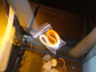

DROID-465
2005.10.24.
blog
droidzóna
levrov
Ha valaki észrevette egyáltalán, egészen az elmúlt napokig heves küzdelem zajlott öt magyar nagyváros - Budapest, Pécs, Debrecen, Eger és Sopron - között Európa 2010-es kulturális fõvárosának címéért. Mire ezeket a sorokat írom, a versenybõl - hála Istennek, na meg a mindent lezsírozó MSZP-lobbinak - Pécs került ki gyõztesen. Mondom, hála Istennek, mert ha Demszky Budapestje nyert volna, akkor nem csak röhögés lenne abból, amit ma itt olvashattok, hanem szomorú valóság. Csodálkozom is, hogy senki sem javasolta a témát a Droidzónába.
Budapest több pontján, így például a Nyugati elõtt, a Deák téren vagy a Moszkva téren dizájnos pavilonokat állított fel a Fõvárosi Önkormányzat, ahol a plebsz óriási plazmatévéken tekinthette meg, avagy a Pesti Est különszámában kinyomtatva vihette haza azokat a számítógépes látványterveket, amelyek Budapest 2010-re tervezett átépítését mutatták be. Ez a nagyszabású átalakítás-mánia természetesen a kulturális fõvárosi cím elnyeréséért folyó pályázat része volt. A pavilonállítás és szórólapozás mellett jutott pénz (naná!) dizájnos weboldalra is, ahol a látogatók fórumon mondhatták el, mi a véleményük a tervekrõl.
Pavilon a Moszkva téren
A Pesti Est alkalmi kiadványa
Természetesen el lehet képzelni, miféle tervek voltak ezek, hiszen a Droidzónába nem kerülhet be akármi. A baj az, hogy ezeket nem ide akarták benyújtani. Nézzünk csak néhány fényképet! Kezdjük ezzel az egyszerû kis ötlettel: legyen gyalogos és biciklis híd a Dunán! Igen, ilyen modernista, üveg-acél-neon csoda. Hová épülne? Természetesen a Lánchíd és az Erzsébet híd közé. Hova máshova? Hát hol mutatna ez szebben, egyaránt takarva a Parlament, a Vár, a Margitsziget és a Lánchíd látképét? Ugye, milyen okosak ezek ott a Városházán. Hiszen nekik köszönhetjük a Lehel csarnokot is. Meg a Mûvészetek Palotáját, ollálá.
A Dunáról tényleg csak ez hiányzik
No, és ez mi? Emlékmû az elsõ buzifelvonulásnak? Hát, lehet. Ezeket a színes bizbaszokat az óbudai gázgyár közepébe álmodta bele az ismeretlen MÛVÉSZ, csupa nagybetûvel és vastagítva, természetesen. Mert az jó. Hogy mire, azt nem tudtam meg, de biztosan buta vagyok és nem értem a mûvészetet.
Színes makkok kiállítása
Na, evezzünk súlyosabb vizekre. A Duna vize világítani fog. Ez egy mûvészeti installáció. (Definíció: olyan, az SZDSZ-es holdudvarba tartozó, magát hatalmas mûvésznek képzelõ szarházi gányolása, amelyre a helyi önkörmányzat sok millió forintot ad, és utólag senki sem tudja megmagyarázni, mit jelent, vagy mire jó.) A Duna medrét egy rakás, a vízbe süllyesztett reflektorral kivilágítják, és az de jó. A halak biztosan kurvára örülnek majd neki, és meg lehet csodálni benne kétmillió budapesti polgár lebegõ ürülékét is. Fényfolyó, mert megérdemlem. De mi épül erre rá?
Hát, kérem, ez. Egy nagy üveggebasz. Belelóg a Dunába, sej. Hogy mire jó? Hát rehabilitálja a közraktárak környékét, bizony. Ezt mondták az okos bácsik. Meg persze remekül mutat itt, a Közgazdasági Egyetem és a Mûegyetem között. A Szabadság-hídhoz nem passzol, mert azon ronda, neonáci turulok vannak, és 2010-re le fogják bontani.
Csodálatos üvegbálnák
A Szabadság híd és az Erzsébet híd között lennének a vízben ezek az izék. Lyukak. Az okos bácsik eztet úgy hívták, hogy negatív folyóstruktúrák. Ha jól belegondolok, az édesanyjuk picsája is lehetne az. Ezekben a lyukakban majd kávézók lesznek, meg az üvegbálnában is, meg még sok más helyen is, mert Budapestnek leginkább kávézókra van szüksége, elvégre az egész fõváros koffeinhiányban szenved, és ez tarthatatlan. De ez nem vicc: a pályázatban minden második mondat a "kávézók és ajándékboltok" szükségességét hangsúlyozza. Na ja. Nincs ám még huszonhat pláza. S persze azt sem tudni, a gyakorlatilag autópályaként funkcionáló alsó rakparton át hogy lehet majd ezeket megközelíteni. Meg azt se, ki fogja ezeket karbantartani, itt ugyanis olyan erõs a víz sodrása, hogy csak nehézbúvárok merülhetnek, ami nem olcsó mulatság. Azt sem mondták meg, ki fogja ezekrõl az uszadékot, fákat, miegymást takarítgatni. Ha meg mindezt mégis megoldják, itt fognak mûködni a világ legdrágább kávézói.
"Negatív struktúrák" vazze
Ez itt a Citadella lenne. Élményfürdõ lesz belõle. A közönséges fürdõ ugyanis nem élmény, az egyszerû, napi rutin, halálunalom, fúj. Túl azon, hogy a változatosság kedvéért ez is egy üveg-acél okádék, biztos olcsó lesz hegyen strandot üzemeltetni.
Ez lenne a Citadellából
Na, és akkor erre basszatok, hogy finoman fogalmazzak. Üvegsas, geca! Rá a Margit hídra, bezonyám! Mi ez? Hát, eloször is, a Margit híd építészeti kompozíciója kurvára elavult, ezt mindenkinek el kell ismerni, különben neonáci és demagóg. A Margit hidat ki kell javítani, így nem maradhat. Ebben a csodaszép üvegbuborékban is elsosorban kávézók lesznek (hát mi a tököm lenne más), továbbá egy turisztikai információs iroda, ahol mindent megmondanak a kedves turistának e szép városról, talán még azt is, kijött-e már a drogelvonóból az, aki ezeket a terveket beterjesztette, és még kávét is adnak neki. Feltéve persze, hogy meg tudja közelíteni ezt a helyet, mert itt kocsival nem lehet megállni.
Maga a csoda
Ó, és ez mi? Fénybaldachin a tolerancia és a szeretet tiszteletére? Nem... Ez itt a Deák tér lenne. A sok milliárd forintba került - az új Nemzeti Színház helyett épült - Gödör klubot és a hozzá tartozó parkot természetesen lebontanák. Az épület funkcióját nem sikerült kiderítenem, de ez biztosan így jó. Nekünk. Naná, ki másnak!
A Deák térre tényleg csak ez hiányzik
A városban jártamban-keltemben többször is beszélgettem a pavilonoknál szmogkúrára fogott lányokkal. Kérdeztem, mit szóltak az emberek ezekhez az agyrémekhez. Elmondták, hogy a legtöbben felháborodottan tiltakoztak, alig-alig volt valaki, akinek bármi is tetszett volna a liberális építomuvész urak eme ámokfutásából.

Mindezek a tervek csodálatos, színes, keményborítós könyvben is megjelentek. Számoljunk csak, mennyibe kerülhetett mindez! Pavilonok, plazmatévék, alkalmazottak, könyvnyomás, ajándéktárgyak, reklámok, weboldal, arculatterv... és akkor még a tervekre egy vasat se adtak ki!

A standokon lehetett kapni ilyen idétlen gumikarkötõt. Az volt ráírva, hogy "Budapest az enyém is". Ennek örülhet a tuskó plebejus, aztán hazatakarodhat a tévé elé, amíg a nagy emberek elrendezik a városa dolgait.
Az egyébként alig tucatnyi fórumozó által látogatott www.budapest2010.hu oldalon többször próbáltam kifejteni véleményem, és mellesleg felvetni néhány értelmes javaslatot arra, mit lehetne ezek helyett csinálni. Kétféle választ kaptam: egyrészt a Fopolgármesteri Hivatal megfelelõ osztálya által kirendelt, unott agitprop-aktivista felelgetett olyanokat, hogy de ez igenis így modern, illetve hogy a városnak szüksége van vidám helyekre, ahol a lakosság kikapcsolódhat, illetve néhány tizenéves kistuskó okoskodott. Egy idõ után meg lett nekem mondva, hogy xenofób senki vagyok, illetve destruktívan gondolkodom, valamint hogy elavult nézeteket képviselek, egy meglehetõsen egyszerû családanyuka közölte, hogy szemtelen vagyok, amiért feleselni merek vele, majd megjelent a Fiatalok Budapestért Alapítvány (mert ilyen is van ám) elnöke, meg valami samesze, és bicskanyitogató stílusban lényegében elmagyarázták, hogy a "Budapest az enyém is" szlogen rám természetesen nem vonatkozik. Érdekes, amikor konkrét javaslatokat adtam a város fejlesztésére, azt egy szóra se méltatták.
Köszönöm e két kedves hölgynek, hogy fõvárosunk dicsõ terveibe beavattak. Õk egyébként elavultak és nem trendiek, épp e fénykép készülte elõtt magyarázta el nekik egy falka plázakurva, akik fejenként fél köbméter gumikarkötõt vételeztek.
A gond az, hogy mi itt, a Droidzónában marha jót rötyögünk rajtuk, de ezek a tervek bizony nagyon is valóságosak, és halálkomolyan gondolták õket. És az se érdekelte õket, tetszik-e a népnek. A nép majd tátja a száját, és mi majd megkommunikáljuk, hogy ez igenis jó. Tartok tõle, ez a lobbi nem fogja ilyen könnyen feladni. Elõbb-utóbb találnak valami ürügyet, hogy ezeket a terveket leporolják, s számolatlanul költsék rá a milliárdokat. Ehhez bármikor adják majd arcukat és nevüket a Heti Hetes sztárjai, a különféle egyéb, szintén ballib kötõdésû celebritások, másodrendû politikusok és újságírók. Hadd lássa a paraszt, hogy az is akarja ezt, aki a tévébõl beszél hozzá nap mint nap.
Ennek már semmi köze Budapesthez, csak szólok, hogy lehet kapni ilyen könyvet is. Városi gyerek vagyok, nekem ez vicces.
Ez meg egy büfé a Keletiben. Mi ezen az érdekes? A felirat balra lent: "Áraink 10% felszolgálási díjat tartalmaznak." Tehát külön fizetek azért, hogy a kólát a kezembe adják. Köszi.